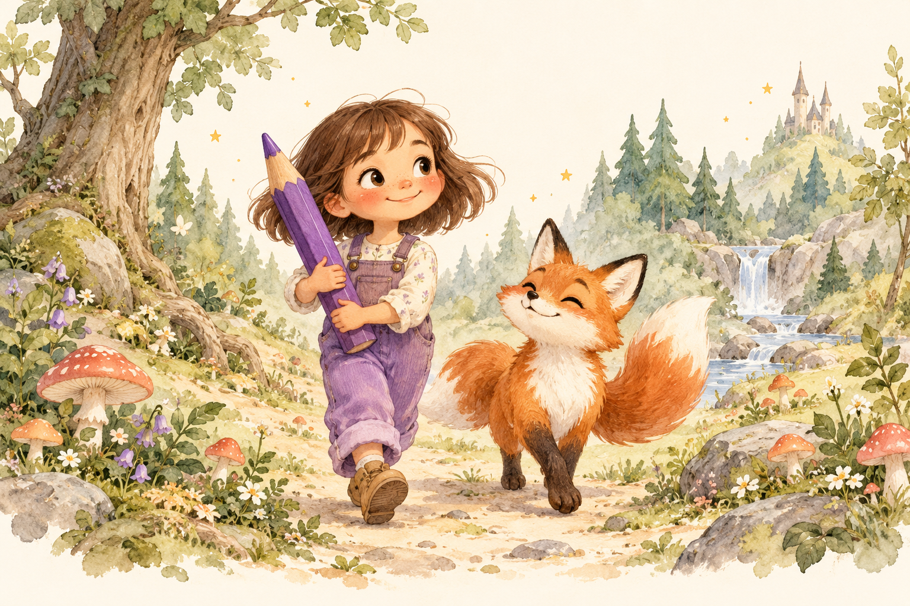

Představte nám hrdinu
Jméno, věk a oblíbené dobrodružství.
Pro osobnější podobu můžete přidat fotku.
Příběh, ve kterém hraje hlavní roli vaše dítě.
Osm omalovánek plných dobrodružství, které
ožijí pod jeho pastelkami.

Vy vyberete dobrodružství. My se postaráme o příběh.
Jméno, věk a oblíbené dobrodružství.
Pro osobnější podobu můžete přidat fotku.
Jednorázově zaplatíte 80 Kč.
Vznikne příběh i osm vlastních omalovánek.
Stáhnete PDF a vytisknete ho doma.
Další kapitola už bude plná vašich barev.
Takto může vypadat první stránka vlastní pohádky. Krátké české vyprávění a velké plochy, do kterých se vejde dětská fantazie.
Veřejná ukázka s fiktivní postavou.
Vyberte svět, ve kterém se rozzáří dětské oči.
Má váš malý hrdina jiný sen?
Na deštivé odpoledne, klidné ráno i chvíli před spaním. Pohádka, kterou si přečtete společně. A pokaždé může mít jiné barvy.
Vlastní jméno, oblíbený svět a zvířecí kamarád.
Text i obtížnost obrázků přizpůsobené věku 3–9 let.
Osm navazujících stran v jednom PDF. Tisknete doma.
Osm stran příběhu. Jedny pastelky. Spousta společné radosti.